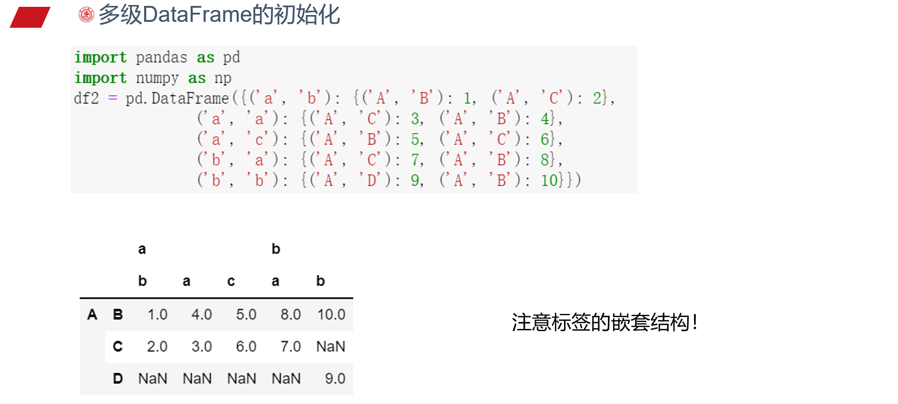

Numpy & Pandas
建议忘记了找 GPT
数据库操作 -> Pandas
数据量大，不关心列含义 -> Numpy
Numpy
List 的复杂度分析
Python 的 list 是用 一块连续的内存空间 存储元素的：
- 内部实际是一个 指针数组（即
PyObject** 指针数组），每个元素指向一个 Python 对象。
- 所以列表本身存的是对象的引用，不是对象本身。
- 所以 Python 的 list 可以包含不同类型的数据（因为存的是指针）。
小技巧
逆置
IO
| Python |
|---|
| ## 保存到 outfile.npy 文件上
np.save('outfile.npy', a)
## 保存到 outfile2.npy 文件上
np.save('outfile2', a)
## c 使用了关键字参数 sin_array
np.savez("runoob.npz", a, b, sin_array = c)
r = np.load("runoob.npz")
|
Pandas
NaN 占位符: np.nan
Series
初始化 s = pd.Series(data, index=index) （相当于一列 ）
上述代码中，data 支持以下数据类型 （一维）：
DataFrame
DataFrame 支持多种类型的输入数据：
- 一维 ndarray、列表、字典、Series 字典
- 二维 numpy.ndarray
- 结构多维数组或记录多维数组
- Series
- DataFrame

索引
df[xxx] 返回 xxx 列构成的 Series
下面三种方法均带有行 index
| Python |
|---|
| ## 两列
df[['B', 'A']]
## 两列，可取索引 （属性）
df.loc[:; ['B', 'A']]
## 两列，按列 id 取 （位置）
df.iloc[:; 1:2]
|
.values 不带行 index，换为行 id，可以认为是值传递
交换两列：
| Python |
|---|
| df[['B', 'A']] = df[['A', 'B']] ## 可以交换
df.loc[:, ['B', 'A']] = df[['A', 'B']].values ## 不能交换
df.loc[:, ['B', 'A']] = df[['A', 'B']] ## 可以交换
|
两张表之间的操作
concat
| Python |
|---|
| pd.concat(
objs, # 列表，可以有多个
axis=0, # 方向，0 竖着合并，1 横着合并
join='outer',
ignore_index=False, # 不考虑 index，合并后重新编号
keys=None, # 对 objs 添加列关键字，相当于两层
levels=None,
names=None,
verify_integrity=False,
copy=True # 深浅拷贝，少用
)
# 用于行合并，按 df1 的 index 进行合并 (outer 合并), 会出现 NaN
pd.concat([df1, df2.reindex(df1.index)], axis=1)
# 合并后仅保留共有的行，相当于交集
pd.concat([df1, df2], axis=1, join='inner')
|
merge
| Python |
|---|
| pd.merge(
left,
right,
how='inner', # left, right, inner, outer
on=None,
left_on=None,
right_on=None,
left_index=False,
right_index=False,
sort=True,
suffixes=('_x','_y'),
copy=True,
indicator=False,
validate=None
)
pd.merge(df1, df2, on='key') # 按 key 列合并
pd.merge(df1, df2, on=['key1', 'key2']) # 按两列合并，保留两列完全对应的
|
join
单张表格操作
groupby
| Python |
|---|
| df.groupby('Column_1') # 每组一个 DataFrame
# groupby 有助于并行操作
df.groupby('Column_1').sum()
df.groupby('Column_1').mean()
# 分列不同操作
df.groupby('Column_1')['Column_2'].sum()
# apply 函数，func 作用在每一行上，与 sum 作用方式相同
df.groupby('Column_1').apply(func)
|
丢失数据处理
注意：
| Python |
|---|
| np.nan == np.nan # False
np.inf == np.inf # True
np.ones(2) / np.zeros(2) # array([inf, inf])
|
IO